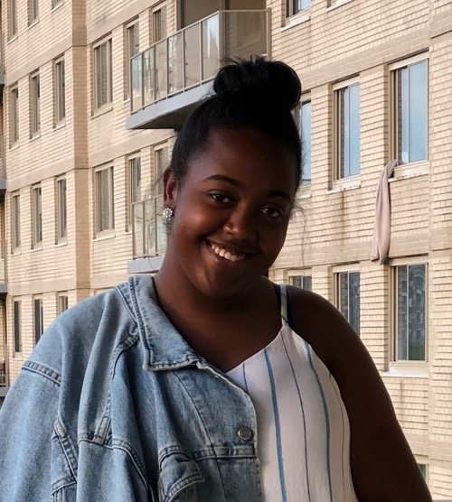

|  |
Nyanti EasonSenior at the Univeristy of Miami Computer Science Major & Mathematics, Music Business Minors I am a Senior at the University of Miami, studying Computer Science. I was born in New York City on April 17, 1999. I am interested in pursing a career that allows me to merge my two interests of technology anf music. My current short term goal is to be on the "Forbes 30 Under 30" list. I am hardworking and love a challenge. I may stress myself out but it just to ensure that I am putting all of my energy into the task at hand. |
| Dates | Work |
|---|---|
| July 2020 | Brand Consulting Intern with CAA Amp |
| Sept. 2019 - May 2020 | Web Master at Institute for Advanced Study of the Americas, University of Miami |
| Aug. 2018 - May 2029 | Web Staff Member at WVUM 90.5FM “The Voice” |
| June 2018 - Aug. 2018 | Digital Marketing Intern at Verve Label Group, Universal Music Group |
| June 2016 - Sept. 2016 | Intern at Roadie (Technology Startup) |
| Web Development | 🖤🖤🖤🖤 |
| iOS Development | 🖤🖤🖤🖤 |
| Python | 🖤🖤🖤 |
| Java | 🖤🖤🖤 |